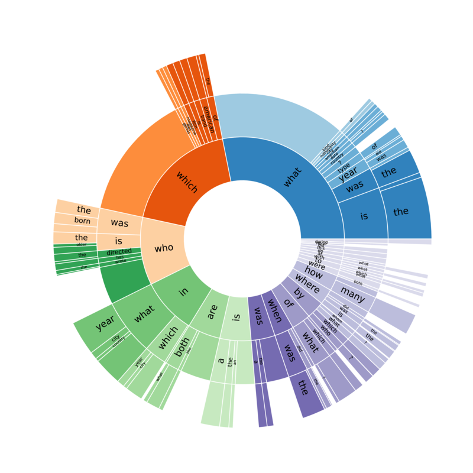

Have you ever wondered,
In which city was Facebook launched?
Are there more languages spoken in India or in China?
How long do I need to bike to burn the calories in my favorite pizza?
The web has the answer to most of these questions, but they are sometimes not summarized in one place.1 These are examples of questions where one needs to piece together information from multiple sources and reason about them before answering, or multi-hop questions.
Recently, we have seen significant advances in question answering (QA) research fueled by large-scale QA datasets [1][2][3]. However, most of these datasets still focus on questions whose answers can usually be found in one or a few adjacent sentences in a single article [1]. More recently, there has also been attempts to construct multi-hop QA data sets with existing knowledge bases or schemas [2], but the resulting question types are inheritly limited by the predefined schema and/or the completeness of the knowledge base. Moreover, most of these existing datasets only provide QA systems with the desired answer and sometimes the articles the answer is from, but give no further clues about how to arrive at it given the articles.
To this end, we are announcing HotpotQA, a new question answering dataset with ~113k question-answer pairs that is designed to remedy these issues.
- HotpotQA questions are designed with multi-hop reasoning in mind. To collect each question-answer pair, we present the introductory paragraphs of two Wikipedia articles to workers on Amazon Mechanical Turk, and ask them to come up with a question that requires reasoning over the two paragraphs to answer.
- The questions are not limited by predefined knowledge bases or schemas. By choosing a diverse set of Wikipedia articles to base our data collection on and not actively limiting the types of questions aside from quality control, we were able to collect a very diverse set of natural questions with varying levels of difficulty.
- We also collected the supporting facts which answers are based on to improve explainability of future QA models. Instead of having to rely on weak clues to infer what the supporting facts are, models trained on HotpotQA can explicitly leverage this information in their training and inference. This would also allow QA systems to explain themselves, rather than just providing an answer without justification.
Here is an example of a question in HotpotQA, in which we highlight the supporting facts we collected as part of HotpotQA for the example in green.

HotpotQA also features a diverse set of questions, including comparison questions, which is being introduced in a large text-based QA dataset for the first time. The second question in the opening examples, "Are there more languages spoken in India or in China?", is a good example of this type. The figure below also illustrates the types of questions and their prevalence in HotpotQA.

For more details about HotpotQA or technical approaches we proposed to collect it, please refer to our EMNLP 2018 paper.
References
[1] "SQuAD: 100,000+ Questions for Machine Comprehension of Text", Pranav Rajpurkar, Jian Zhang, Konstantin Lopyrev, Percy Liang. EMNLP 2016.
[2] "Constructing Datasets for Multi-hop Reading Comprehension Across Documents", Johannes Welbl, Pontus Stenetorp, Sebastian Riedel. TACL 2018.
[3] "TriviaQA: A Large Scale Distantly Supervised Challenge Dataset for Reading Comprehension", Mandar Joshi, Eunsol Choi, Daniel Weld, Luke Zettlemoyer. ACL 2017.
-
The first question, for instance, can be answered from Wikipedia, but only through knowing that Zuckerberg and his co-founders launched Facebook from Harvard University (Mark Zuckerberg page), and that Harvard University is based in Cambridge, Massachussetts (Harvard University page). (Yes, we checked, and the Facebook page does not mention this information at the time we wrote this post.) ↩